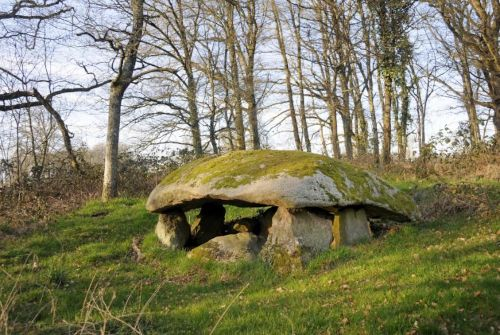
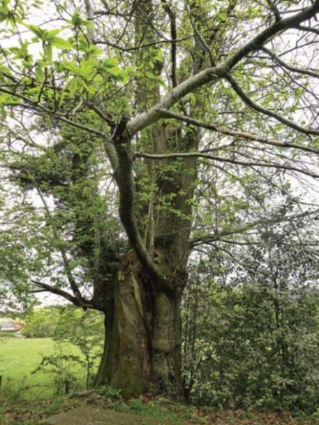
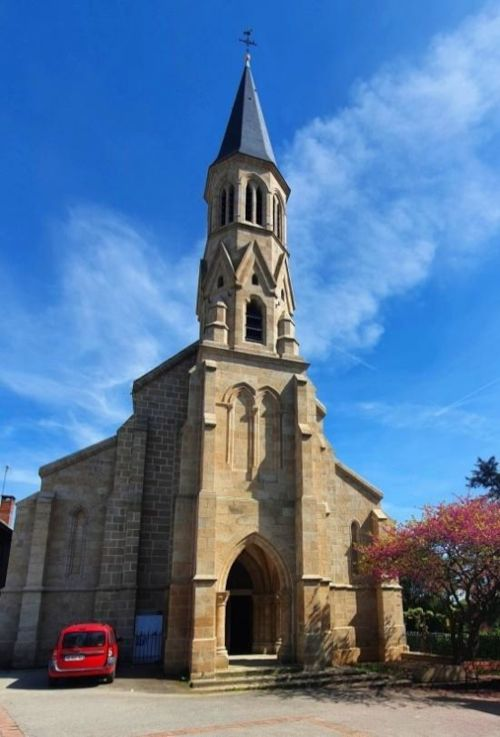
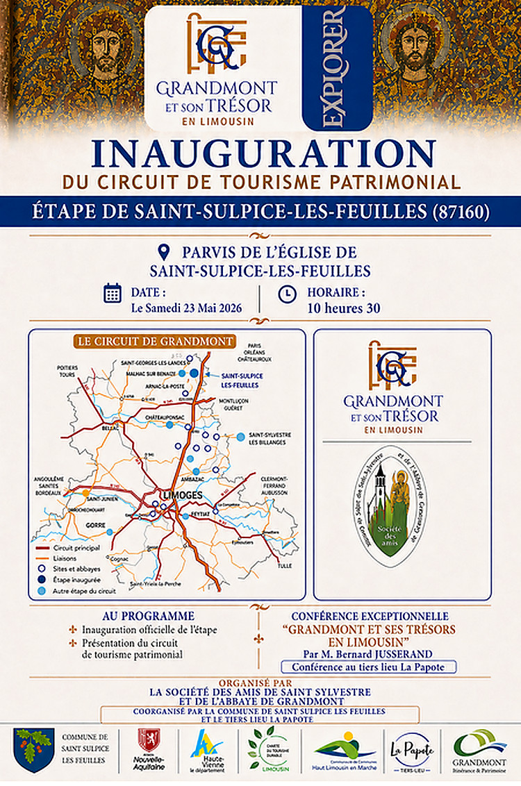

Retrouver tous les sites remarquables à proximité sur le site https://www.visitlimousin.com/.

Le Dolmen des Bras
Voyagez aux origines de notre territoire en découvrant l'un des plus anciens monuments de Saint-Sulpice-les-Feuilles.
Au lieu-dit Les Bras, niché dans la campagne saint-sulpicienne, se dresse un remarquable témoin de la Préhistoire : le Dolmen des Bras. Édifié il y a plus de 5 000 ans, à l'époque du Néolithique, ce monument mégalithique rappelle que notre territoire était déjà occupé par des communautés humaines bien avant l'apparition de l'écriture.
Composé d'une imposante table de granit reposant sur plusieurs pierres dressées, le dolmen constituait vraisemblablement une sépulture collective. Ces monuments funéraires témoignent du savoir-faire, des croyances et de l'organisation sociale des premiers habitants de notre région.
Au fil des millénaires, le Dolmen des Bras a traversé les âges, conservant intacte une part du mystère qui entoure encore les sociétés préhistoriques. Son allure monumentale et son environnement naturel préservé invitent à la contemplation et à l'imagination. Face à ces pierres dressées par l'homme il y a plusieurs milliers d'années, le visiteur mesure toute la profondeur de l'histoire qui a façonné notre territoire.
Reconnu pour son intérêt patrimonial exceptionnel, le Dolmen des Bras est classé au titre des Monuments historiques depuis 1940, garantissant ainsi sa préservation pour les générations futures.
Aujourd'hui, ce site constitue une étape incontournable pour les amateurs d'histoire, d'archéologie et de randonnée. Il offre une occasion unique de remonter le temps et de découvrir l'un des plus précieux héritages préhistoriques de Saint-Sulpice-les-Feuilles.
Entre nature, patrimoine et mystère, le Dolmen des Bras vous invite à un fascinant voyage au cœur de plus de cinq millénaires d'histoire.

Les Châtaigniers « Petit Jean »
À Virvalais, venez admirer les plus célèbres châtaigniers du Limousin, deux géants âgés d'environ 600 ans qui veillent sur le Sentier des Mille Feuilles depuis des siècles.

Au cœur du paisible village de Virvalais, sur la commune de Saint-Sulpice-les-Feuilles, les Châtaigniers Petit-Jean constituent l'un des sites naturels les plus remarquables du territoire. Ces deux arbres majestueux, répertoriés parmi les arbres remarquables du Limousin, offrent aux visiteurs un témoignage exceptionnel de la richesse naturelle et patrimoniale de notre commune.
Situés sur la propriété de Jean Pithon, dont ils tirent leur nom, les deux châtaigniers bordent le célèbre Sentier des Mille Feuilles et attirent chaque année promeneurs, randonneurs et amoureux de la nature. Leur âge est estimé à près de 600 ans, faisant d'eux de véritables gardiens de l'histoire locale.
Le plus imposant des deux arbres présente une circonférence de 9,50 mètres et est reconnu comme le plus gros châtaignier du Limousin. Sa silhouette spectaculaire et son tronc monumental impressionnent tous ceux qui viennent à sa rencontre.
Dans un cadre calme et verdoyant, les Châtaigniers Petit-Jean invitent à une pause hors du temps. Que ce soit au détour d'une randonnée, d'une découverte du patrimoine local ou simplement pour profiter de la beauté de la nature, ce site emblématique offre une expérience authentique et mémorable.
Véritables monuments vivants, les Châtaigniers Petit-Jean incarnent l'identité rurale et naturelle de Saint-Sulpice-les-Feuilles. Une étape incontournable pour découvrir l'âme de notre territoire et s'émerveiller devant ces géants séculaires.
Vous trouverez une aire de pique-nique sur place !

L'église : édifice emblématique
L'église

L'église actuelle n'est pas celle d'origine. La précédente, construite entre le IXe et le XIIe siècle, tombait en ruine malgré deux restaurations (1636 et 1809). Le nouvel édifice, commencé en 1851, a été conçu par un ancien élève de Viollet-le-Duc, ce qui explique son aspect médiéval. Les bas-côtés ont été ajoutés entre 1876 et 1883.
Le clocher de la première église abritait 3 cloches. Deux ont été transportées à Limoges à la Révolution. En 1879, l'unique cloche restante a été refondue et remplacée par deux autres (572 kg en sol dièse, 320 kg en la dièse).

Le clocher actuel (30 m) et le porche ont été restaurés récemment. L'inauguration des travaux a eu lieu le 14 septembre 2018. Les tranches suivantes (toitures, vitraux, murs) se sont terminées début 2021. La rénovation de l'intérieur est attendue d'ici quelques années.

À l'issue des travaux, les originaux des deux reliquaires classés (l'Ange et le Saint Sébastien), aujourd'hui exposés au Musée de l'Évêché à Limoges, devraient revenir dans l'église dans une vitrine blindée.

Grandmont et son trésor en Limousin
Bernard Jusserand, SASSAG
Les deux reliquaires ci-dessus figurent parmi les plus remarquables de tous ceux qui proviennent de l’abbaye de Grandmont. Suite à la suppression de l’ordre de Grandmont par le pape, l’évêque de Limoges fit disperser tout ce qui était vendable à l’intérieur de l’abbaye. Seul le caractère sacré des reliques préserva de la destruction les reliquaires qui les conservaient. L’évêque les fit distribuer aux paroisses de son diocèse et deux objets furent attribués à la paroisse de Saint-Sulpice-les-Feuilles. Nous devons à son secrétaire, l’abbé Legros, la conservation des procès-verbaux de cette distribution. Les objets ainsi dispersés échappèrent sans doute plus facilement aux récupérations de métaux par les autorités révolutionnaires et environ la moitié du trésor de Grandmont peut-être découverte en se promenant à travers la Haute-Vienne et ses environs.
La société des amis de Saint-Sylvestre et de l’abbaye de Grandmont a décidé, au moment où les fouilles de Grandmont dévoilent des vestiges très importants, de valoriser cet exemple unique d’un trésor préservé et dispersé dont l’origine commune est peu connue. Ce projet s’inscrit aussi dans la perspective d’une grande exposition sur Grandmont prévue au musée des Beaux-Arts de Limoges à partir d’octobre 2027.
La SASSAG a conçu un circuit de tourisme patrimonial et a assuré la réalisation d’un dépliant introductif. Les communes ont pris en charge la fabrication et l’installation de panneaux explicatifs devant chaque lieu de conservation. La conférence qui a eu lieu lors de cette inauguration présentera l’histoire du trésor de Grandmont, l’histoire des reliquaires de Saint-Sulpice-les-Feuilles et les animations du circuit que la SASSAG souhaite développer avec le plus large cercle de partenaires possibles.